Determination of initial slice boundaries
Warning
Please note that the code shown below is under development and may undergo modifications. If problems arise, try first installing the development versions of numina and fridadrp.
General procedure
To determine the boundaries of each of the 30 slices obtained on the H2RG detector when using FRIDA in IFS mode, we start with a QTH lamp exposure. As a test, we use the images:
0000000096-20260505-FRIDA-FridaSuccess-raw.fits: QTH (Quartz-Tungsten-Halogen) lamp0000000132-20260506-FRIDA-FridaSuccess-raw.fits: spectral traces
Both images are available in the subdirectory
Comfiguraciones-IM-IFS-pruebas_con_el_DFAgent, which contains some of the
first calibration images obtained.
The general procedure uses the following scripts:
fridadrp-find_slice_boundary_borders_from_flat: determination of the boundaries of each slice.fridadrp-fit_slice_boundary_borders_with_polynomials: fitting of the boundaries using polynomials.fridadrp-overplot_slice_boundary_polynomials: overlay of the detected boundaries for each slice, as well as the resulting polynomial fits, on arbitrary images. This script also allows overlaying the polynomial fit on the spectral traces.fridadrp-predict_polynoimal_slice_borders: extrapolation of the boundaries of the first and last slices when either of these two falls outside the detector.fridadrp-find_traces_within_slice_boundary_polynomials: polynomial fitting of the spectral traces contained within each slice.fridadrp--interpolate_traces_within_slices: this script allows the interpolation of incorrect spectral traces using information from the same traces in slices of the same family.
Polynomial boundaries of the slices
Slice borders at a single column
After testing different approaches, a method that seems to work well consists of taking vertical cuts of the image and using the positions of the first and second derivatives. The first derivatives indicate approximately where the signal rises and falls occur. The second derivative (searched for in the neighborhood of each first derivative) allows us to approximate the region where the signal has maximum concavity (which provides a more generous slice width than the first derivative). Finally, we opted to fit a straight line between the first and second derivative of each signal rise (or fall), and extrapolate that line until it intersects a value coinciding with the minimum signal between each pair of slices (after adding 1% of the 90th-percentile signal of the slice whose edge we want to estimate).
(venv_numina) $ fridadrp-find_slice_boundary_borders_from_flat --help
We start by running the script using a single column --colrange 501 501. This
way, the code shows us several figures that allow us to understand how the
calculations are being performed.
(venv_frida) $ fridadrp-find_slice_boundary_borders_from_flat \
--flatfile 0000000096-20260505-FRIDA-FridaSuccess-raw.fits \
--colrange 501 501 \
--plots
{kind=link}
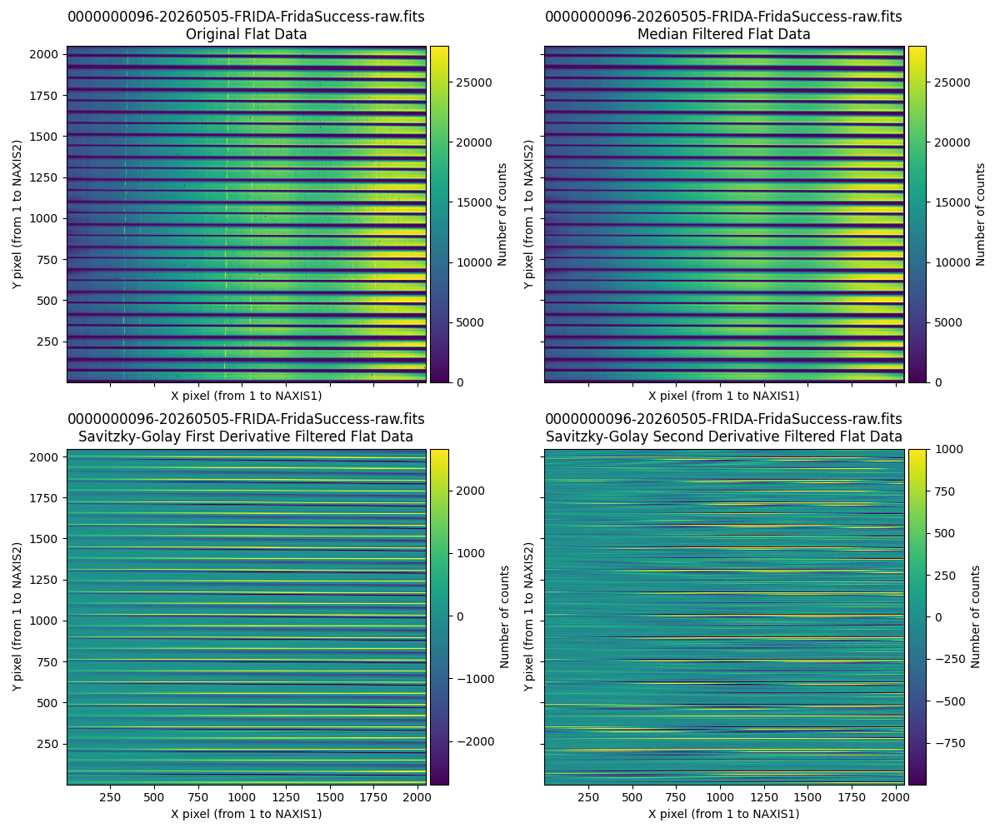
Fig. 1 Mosaic showing the initial processing of the QTH image. Top left, initial
image. Top right, image smoothed with a median filter along the horizontal
axis. The bottom images show the first (left) and second (right) derivatives
when moving vertically along the image. The derivatives are computed using a
Savitzky-Golay filter. The default parameters for this filter are
--savgol-ywindow 5 and --savgol-polyorder 2.
When using the zoom option on any of the 4 images, that operation is applied identically to the other three.
{kind=link}
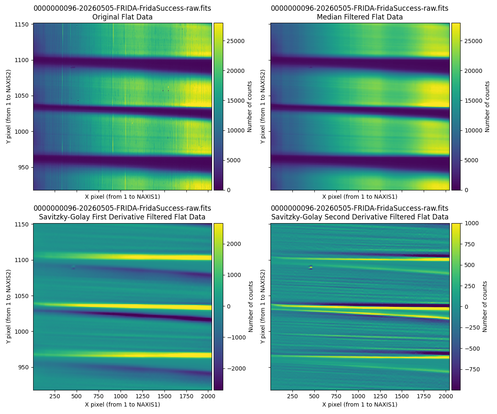
Fig. 2 Result of applying zoom to the previous figure (Fig. 1). This allows us to better visualize how both the first derivatives (with positive and negative sign) and the second derivatives (with positive sign) can be used as a first estimate of the slice boundaries.
After pressing q to close the previous figure, the code shows us, in a new
figure, how the signal changes along the selected column (501 in this example).
{kind=link}
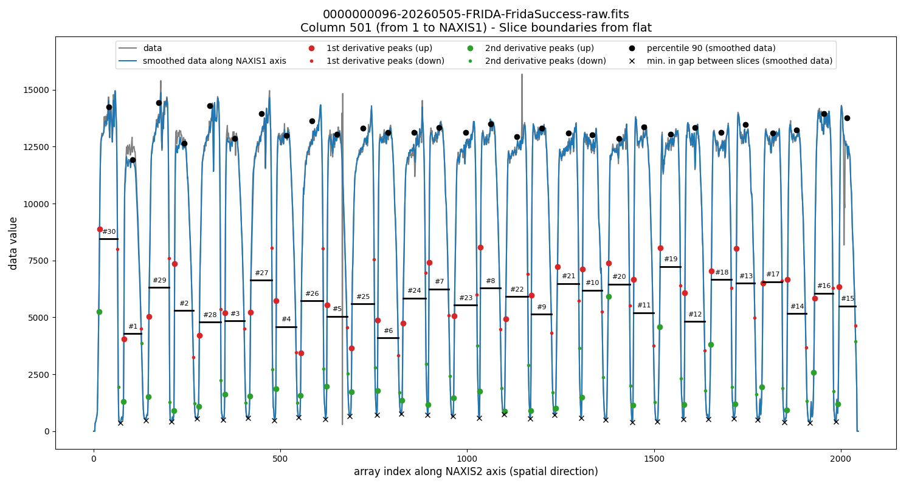
Fig. 3 Vertical cut along column 501. Gray shows the original image. Blue
shows the image after applying the median filter along the X axis (--xmedian 21 by default). The red filled circles show the positions where the first
derivative has a maximum (large circle) and a minimum (small circle). The green
filled circles indicate the positions where the second derivative has a maximum
(i.e., has concave curvature seen from above); the large circle corresponds to
the left edge and the small circle to the right edge. The black ‘x’ symbols
mark the minimum between each pair of slices. The black filled circle indicates
the 90th percentile of the smoothed image and is placed in the central region
of each slice.
The previous figure clearly shows that, although the second derivatives seem to bound the slice edges fairly well, they underestimate their dimensions. After several tests, a good alternative consists of performing a linear fit between the positions of the first and second derivatives on each side of each slice, and extrapolating that value until it reaches a value close to the minimum signal reached in the gap between slices. The following figure shows what happens in the gaps between all the slices.
{kind=link}
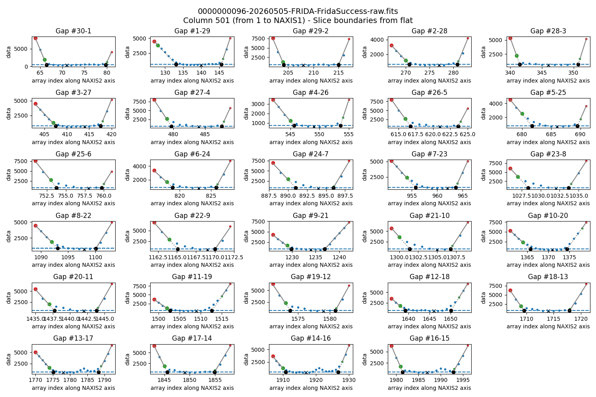
Fig. 4 Mosaic showing what happens in the gaps between consecutive slices. The red and green filled circles again correspond to the first and second derivatives. On both sides of each slice, a linear fit has been performed to these points. The extrapolation outward from each slice is carried out until reaching a signal that exceeds the minimum value in the corresponding gap by an amount equal to 1% of the difference between the median signal within the slice and the minimum value in the gap. The black filled circles indicate that extrapolated positions.
For the left edge of the first slice and the right edge of the last slice, the extrapolation thresholds corresponding to the right and left edges of the respective slices are used.
{kind=link}
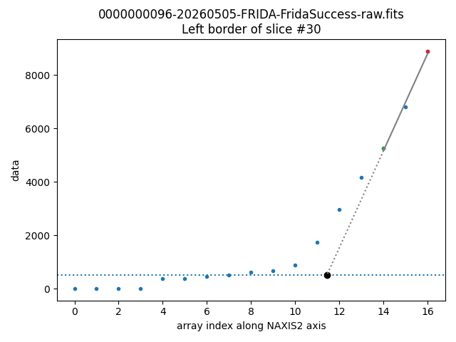
{kind=link}
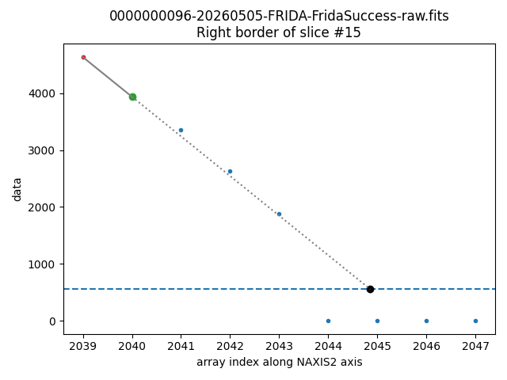
Fig. 5 Determination of the extrapolation of the left edge for the first slice (ID 30) and the right edge for the last slice (ID 15).
Once the boundaries of all slices have been determined, the script shows us a summary mosaic with the result.
{kind=link}
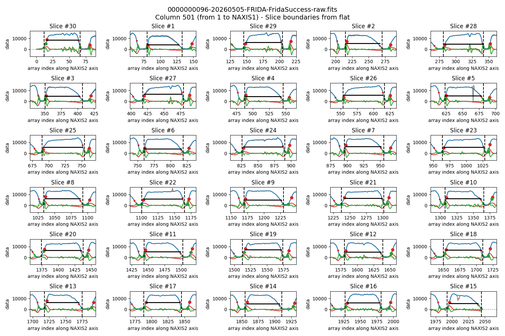
Fig. 6 Final determination of the boundaries of all slices for column 501 of the image. The black dashed lines indicate the limits obtained. The curves corresponding to the first derivative (solid red line) and second derivative (solid green line) are overplotted.
Since we have only selected one column using --colrange 501 501, after
pressing q, the script ends execution without generating any output file.
We can compare the slice widths as a function of the slice ID.
{kind=link}
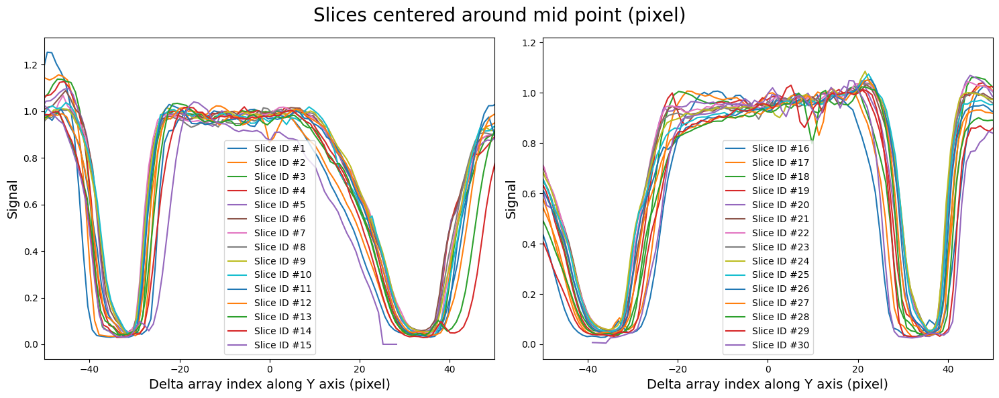
Fig. 7 Comparison of the widths of the different slices, grouped into the two ID families, with the slices centered around its mid point.
{kind=link}
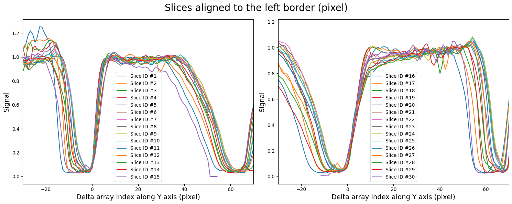
Fig. 8 Comparison of the widths of the different slices, grouped into the two ID families, with the slices aligned to the left border.
{kind=link}
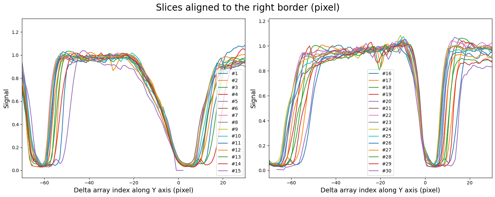
Fig. 9 Comparison of the widths of the different slices, grouped into the two ID families, with the slices aligned to the right border.
Another way of representing the same information consists of plotting the slice width as a function of ID number.
{kind=link}
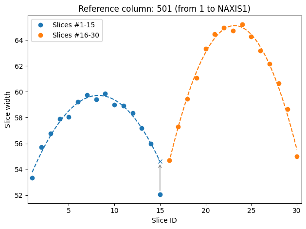
Fig. 10 Comparison of the widths of the different slices, grouped into the two ID families. As will be discussed below, slice ID 15 shows a narrower width than expected. This is because it is partially located outside the useful region of the detector.
The most important aspect to highlight from the previous figure is that the variation in slice width appears to fit reasonably well to a 2nd degree polynomial. This will be useful later on, when we need to predict the location of the boundaries of a slice that may not appear complete on the detector.
Slice borders at multiple columns
The --colrange parameter (column number along NAXIS1, starting at 1) allows
one or more ranges to be defined. If there are several ranges, --colrange N1 N2 must be repeated. For example, we could use: --colrange 10 800 --colrange 1500 2000. If --colrange is not specified, the script uses all initially
valid columns of the H2RG detector (from 5 to 2044; the detector has an outer
border of 4 pixels that contains no useful signal).
Now that we have shown how the boundary of each slice is calculated for a particular column, we can run the script for all columns.
(venv_frida) $ fridadrp-find_slice_boundary_borders_from_flat \
--flatfile 0000000096-20260505-FRIDA-FridaSuccess-raw.fits \
--overwrite
Since in the last run we did not use the --colrange argument, the script
makes use of all initially valid columns of the H2RG detector (columns 5 to
2044 along NAXIS1).
The result is stored in a FITS file, whose default name is
slice_boundary_borders_from_flat_1-30.fits. The suffix 1-30 before the
extension indicates that the script has fitted all 30 slices (see below for
other cases). The output file name can be modified using --output <filename>.
If the file already exists, the program raises an error unless --overwrite is
used.
The output file contains 3 extensions.
(venv_frida) $ fitsinfo slice_boundary_borders_from_flat_1-30.fits
The L-BORDER and R-BORDER extensions contain the coordinates (position
along NAXIS2, using array indices, i.e., ranging from 0 to NAXIS2-1) of the
points that could be computed. For some columns of the detector (positions
along NAXIS1) these points could not be computed and their value is NaN. This
happens when the peaks of the first and second derivatives do not maintain the
expected order. Normally this is only a subset of the columns, so the
boundaries should still be fittable. We leave this task for the script
fridadrp-fit_slice_boundary_borders_with_polynomials.
The SLIWIDTH extension contains the width of the slices as a function of
column number (it inherits the NaNs from the two previous extensions).
We can visualize the detected boundary borders using the script
fridadrp-overplot_slice_boundary_polynomials.
(venv_numina) $ fridadrp-overplot_slice_boundary_polynomials --help
We run this script using as inputs both the QTH image and the FITS file
generated by the script fridadrp-find_slice_boundary_borders_from_flat.
(venv_frida) $ fridadrp-overplot_slice_boundary_polynomials \
--borders slice_boundary_borders_from_flat_1-30.fits \
--image 0000000096-20260505-FRIDA-FridaSuccess-raw.fits \
--sliceid
{kind=link}
Fig. 11 Full image with the detected boundaries. Note that for some columns these boundaries do not exist because the detection process did not work correctly. This effect is not very significant because, as we can verify in the terminal output, the number of columns with NaNs is small.
We can zoom in to better appreciate what happens with different slices. It is worth paying attention to what happens at the bottom and top of the detector.
{kind=link}
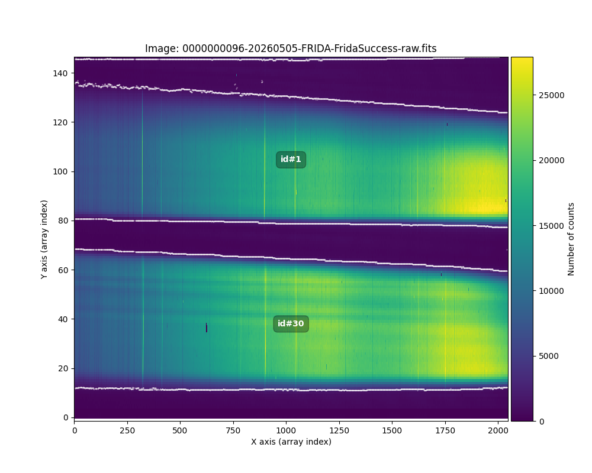
{kind=link}
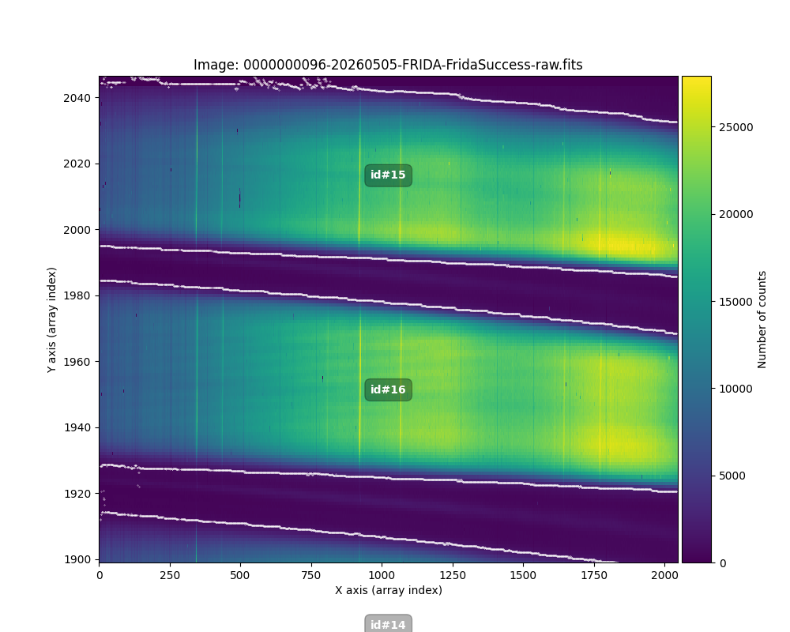
Fig. 12 Zoomed view of what happens in the first (left panel) and last (right panel) slices.
In this case it is worth noting that the slice appearing at the top edge (slice ID 15) falls partially outside the detector. The upper boundaries of that slice are underestimated because the useful detector information ends at pixel 2044.
{kind=link}
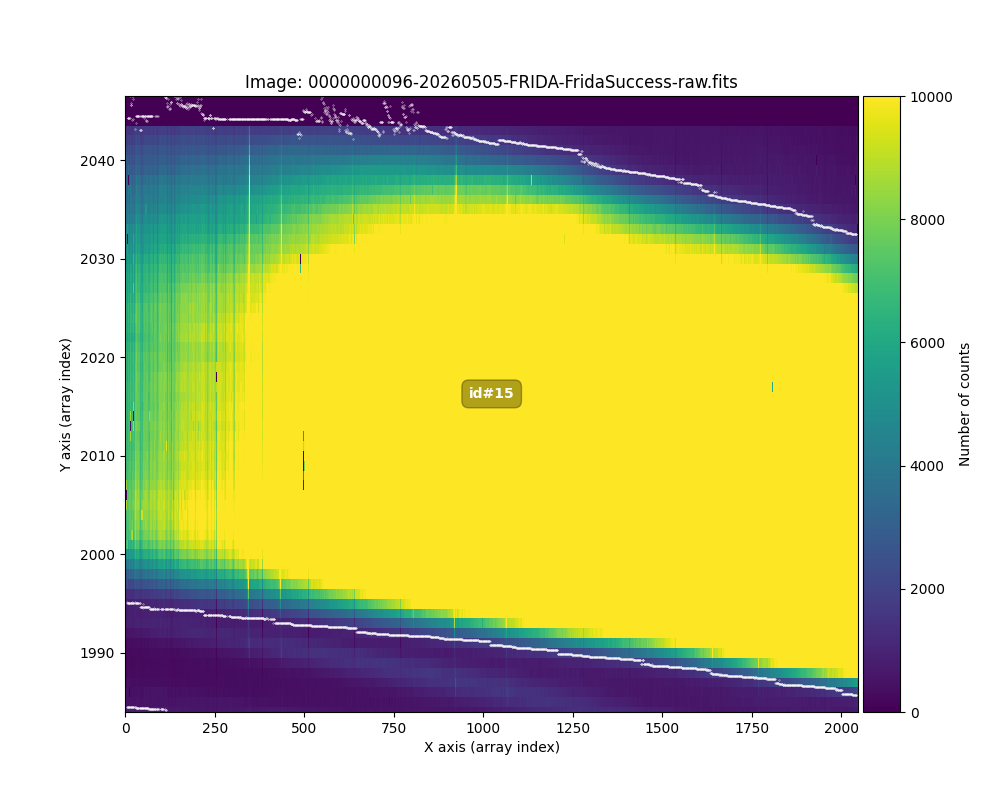
{kind=link}
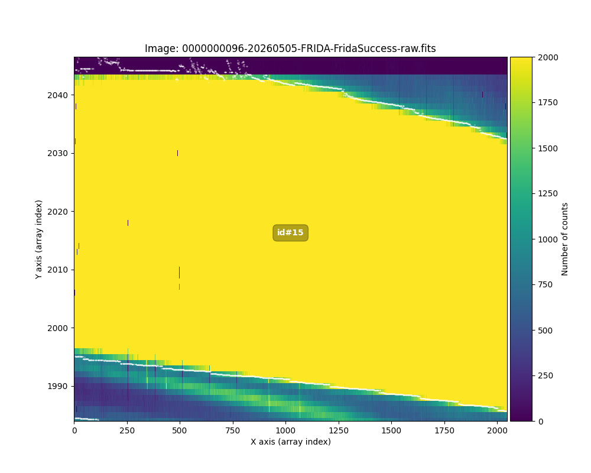
Fig. 13 Detail of the last slice (ID 15), using different cuts. It can be seen how the signal of this slice is truncated at the top because part of the slice falls outside the useful region of the detector.
We can easily visualize how the width of each slice varies as we move along
NAXIS1, as well as the variation between different slices. It is enough to plot
the 2D image stored in the SLIWIDTH extension of the file
slice_boundary_borders_from_flat_1-30.fits.
(venv_frida) $ numina-ximshow slice_boundary_borders_from_flat_1-30.fits \
--extname sliwidth \
--cbar_orientation vertical \
--cbar_label "Slice width (pixels)" \
--ylabel "Slice number" \
--cmap viridis --z1z2 45,70
{kind=link}
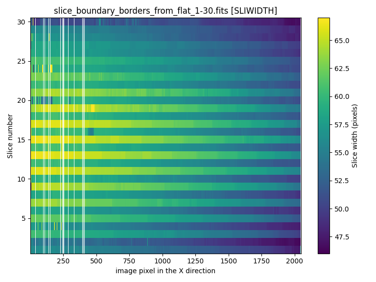
Fig. 14 Slice width value for each detector column along NAXIS1. Note the clear difference between the even and odd slices, corresponding to the two ID families: 1 to 15 (even slices, bottom to top) and 16 to 30 (odd slices, top to bottom). Columns shown in white correspond to NaNs.
In this particular case, although slice ID 15 falls partially outside the
useful region of the detector, the script
fridadrp-find_slice_boundary_borders_from_flat has nonetheless been able to
detect both boundaries of that slice. Since there can be cases (see below) in
which the entire lower boundary of the first slice (ID 30) or the entire upper
boundary of the last slice (ID 15) fall outside the detector, it is useful to
run the boundary borders detection script again while avoiding attempts to fit
non-existent boundaries.
Avoiding missing borders
The script fridadrp-find_slice_boundary_borders_from_flat allows the use of
the following arguments:
--slice-ini: default 1, numbering from 1 (ID 30, at the bottom of the detector) to 30 (ID 15, at the top).--slice-end: default 30 (ID 15, at the top of the detector), following the same numbering.--row-ini: lower row number (1-based index) along NAXIS2. The default is 5 (first valid pixel after skipping the 4 initial border pixels). Rows below--row-iniare set equal to zero in the image when searching for slice boundaries.--row-end: upper row number (1-based index) along NAXIS2. The default is 2044 (last valid pixel to avoid the 4 final border pixels). Rows above--row-endare set equal to zero in the image when searching for slice boundaries.
The idea is to use --slice-ini 2 to avoid fitting the first slice (ID 30, at
the bottom) or --slice-end 29 to avoid fitting the last slice (ID 15, at the
top).
If we use --slice-ini 2, we must also use an appropriate value for
--row-ini, so that we can ignore the first portion of the image at the bottom
that partially contains slice ID 30. Similarly, if we use --slice-end 29, we
must use an appropriate value of --row-end to avoid using the upper part of
the image where slice ID 15 may appear only partially.
In principle this should also work with --slice-ini greater than 2 and
--slice-end less than 29. We could even compute the boundaries of a single
slice by making --slice-ini and --slice-end equal. In these cases,
appropriate values of --row-ini and --row-end would need to be used.
In the case of the image 0000000096-20260505-FRIDA-FridaSuccess-raw.fits, the
top slice, number 30 (slice ID 15), has its upper boundary truncated (it
extends beyond row 2044, the last valid row on the detector along NAXIS2). In
this case we can fit slices 1 to 29, without using the last one.
(venv_frida) $ fridadrp-find_slice_boundary_borders_from_flat \
--flatfile 0000000096-20260505-FRIDA-FridaSuccess-raw.fits \
--slice-end 29 \
--row-end 1986 \
--overwrite
In this case the generated output file is appropriately named
slice_boundary_borders_from_flat_1-29.fits by default.
We visualize the new result.
(venv_frida) $ fridadrp-overplot_slice_boundary_polynomials \
--borders slice_boundary_borders_from_flat_1-29.fits \
--image 0000000096-20260505-FRIDA-FridaSuccess-raw.fits \
--sliceid
{kind=link}
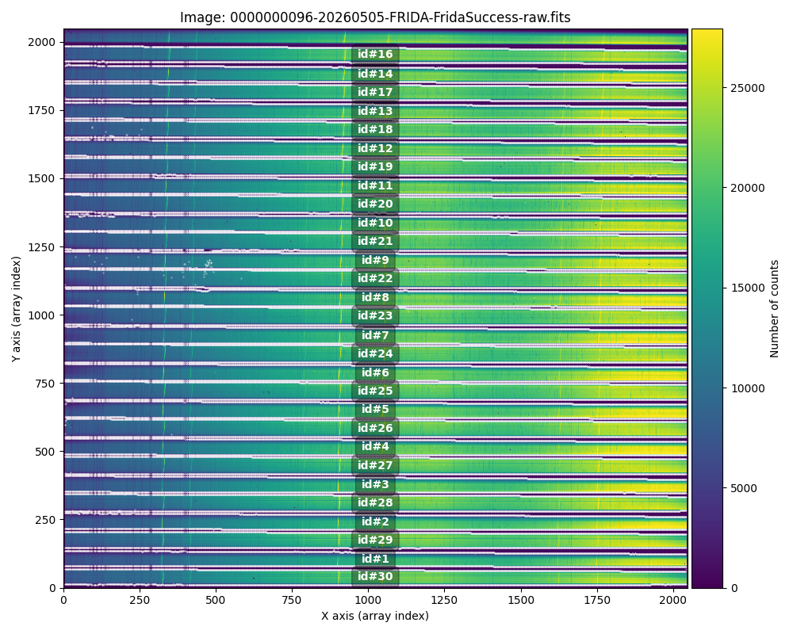
{kind=link}
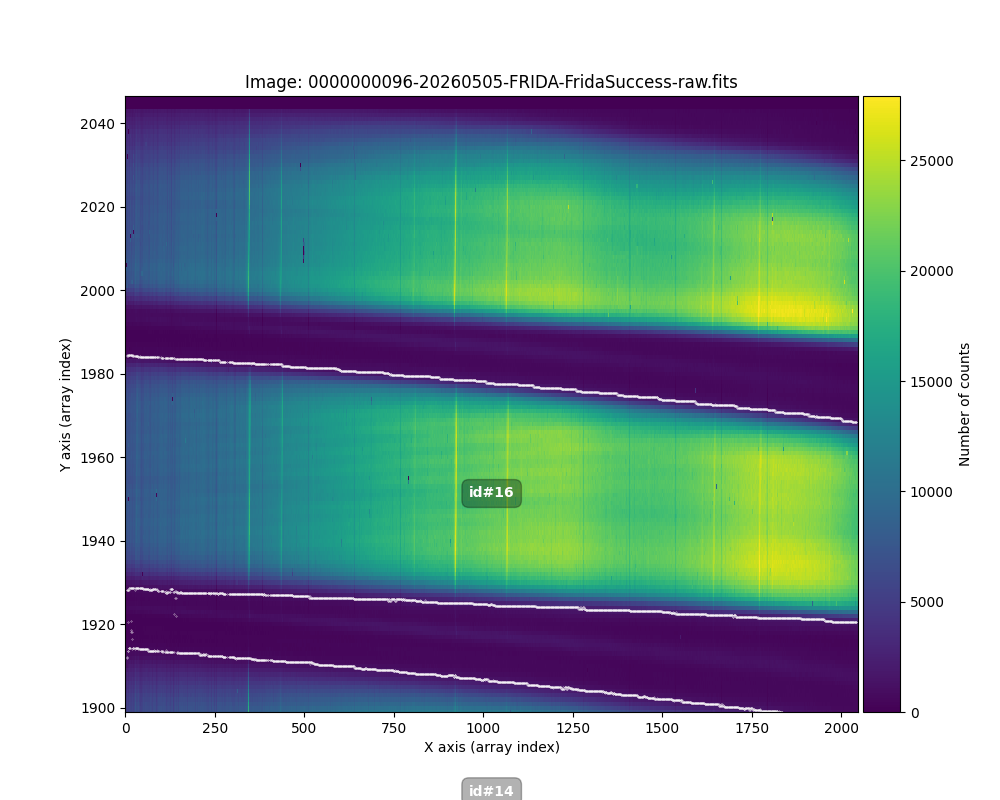
Fig. 15 We can see that in this case the last slice (ID 15) has not been fitted.
Polynomial fit of the slice borders
The next step consists of performing a polynomial fit to the boundaries
detected in the previous procedure. This task is carried out with the help of
the script fridadrp-fit_slice_boundary_borders_with_polynomials.
(venv_numina) $ fridadrp-fit_slice_boundary_borders_with_polynomials --help
(venv_frida) $ fridadrp-fit_slice_boundary_borders_with_polynomials \
--input slice_boundary_borders_from_flat_1-30.fits \
--output slice_boundary_polynomials_1-30.fits \
--deg 3 \
--overwrite
We start by fitting all 30 slices, even though we already know that slice ID 15 is incorrect.
The previous script saves the results in a FITS file whose name in this example
is slice_boundary_polynomials_1-30.fits (we have preserved the suffix 1-30
before the extension, to follow the same convention used to name the FITS file
employed as input).
The output file contains 3 extensions:
(venv_frida) $ fitsinfo slice_boundary_polynomials_1-30.fits
The L-BORDER and R-BORDER extensions contain the coefficients of the
polynomials fitted to each boundary (NAXIS1=4 coefficients, NAXIS2=30 slices).
The extension SLIWIDTH contains the width of the slices as a function of the
column number along NAXIS1 (for the NAXIS2=30 slices). It is interesting to
compare the image stored in this last SLIWIDTH extension with the one
obtained earlier using the values of the points detected as boundaries.
{kind=link}
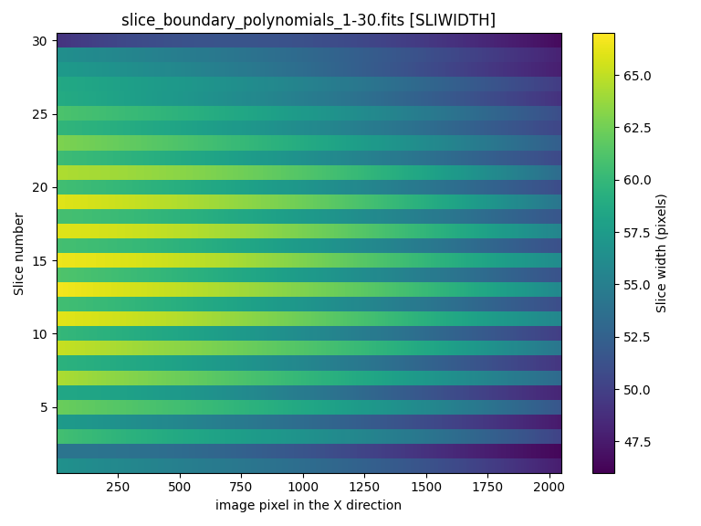
Fig. 16 Comparison of the slice widths stored in the SLIWIDTH extension of the files
slice_boundary_borders_from_flat_1-30.fits (left panel) and
slice_boundary_polynomials_1-30.fits (right panel). The polynomial fit
generates a smooth variation with column number along NAXIS1.
We can check the polynomial fits graphically by overlaying the points previously determined as slice boundaries (which are the points used in the polynomial fits) together with the resulting polynomials.
(venv_frida) $ fridadrp-overplot_slice_boundary_polynomials \
--borders slice_boundary_borders_from_flat_1-30.fits \
--poly slice_boundary_polynomials_1-30.fits \
--image 0000000096-20260505-FRIDA-FridaSuccess-raw.fits \
--sliceid
{kind=link}
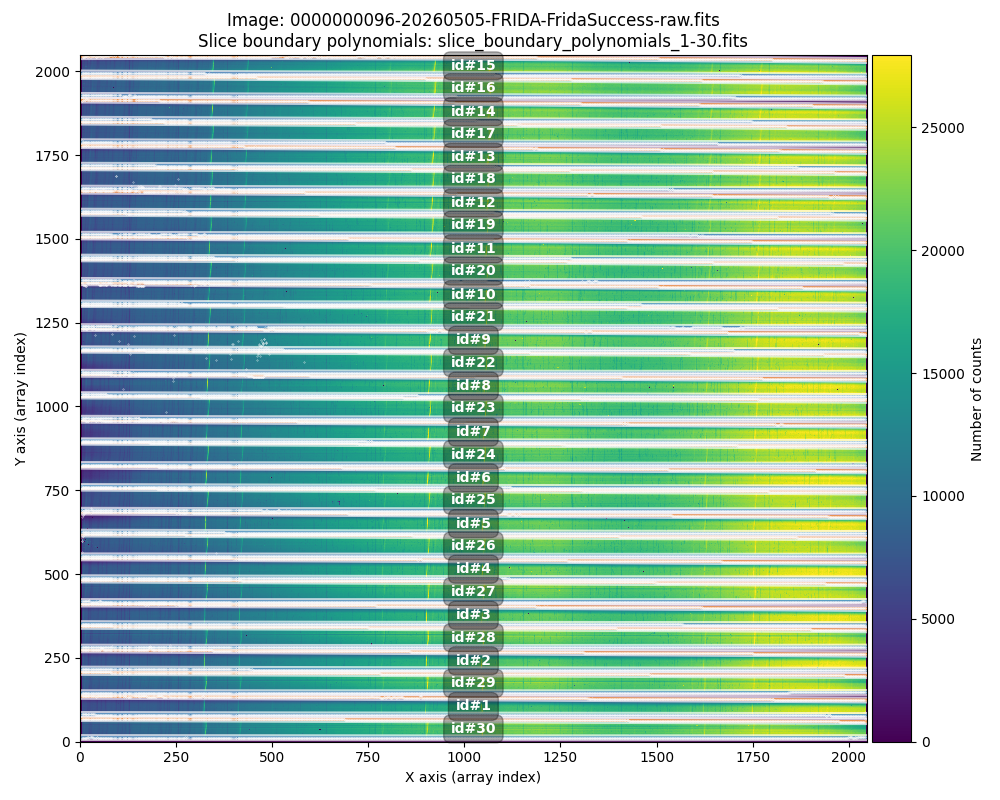
Fig. 17 Full image with the detected boundaries and the fitted polynomials.
We can zoom in to better appreciate what happens with different slices. It is worth paying attention to what happens at the bottom and top of the detector.
{kind=link}
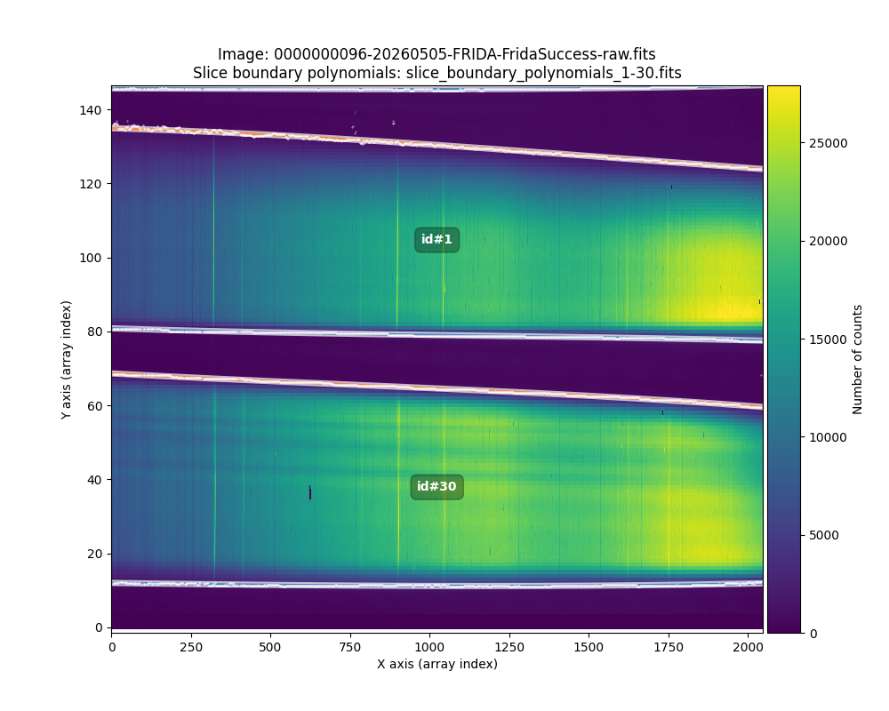
{kind=link}
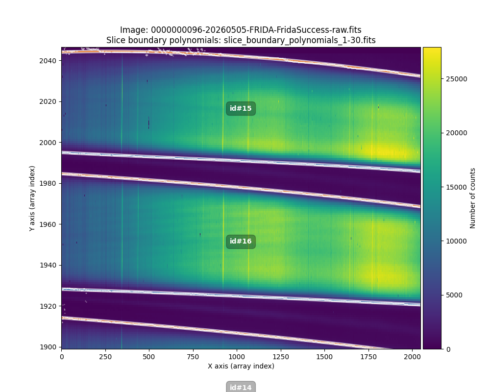
Fig. 18 Zoomed view of what happens in the first (left panel) and last (right panel) slices.
As we already saw earlier when determining the slice boundaries, the upper boundary of slice ID 15 extends beyond the useful region of the detector.
{kind=link}
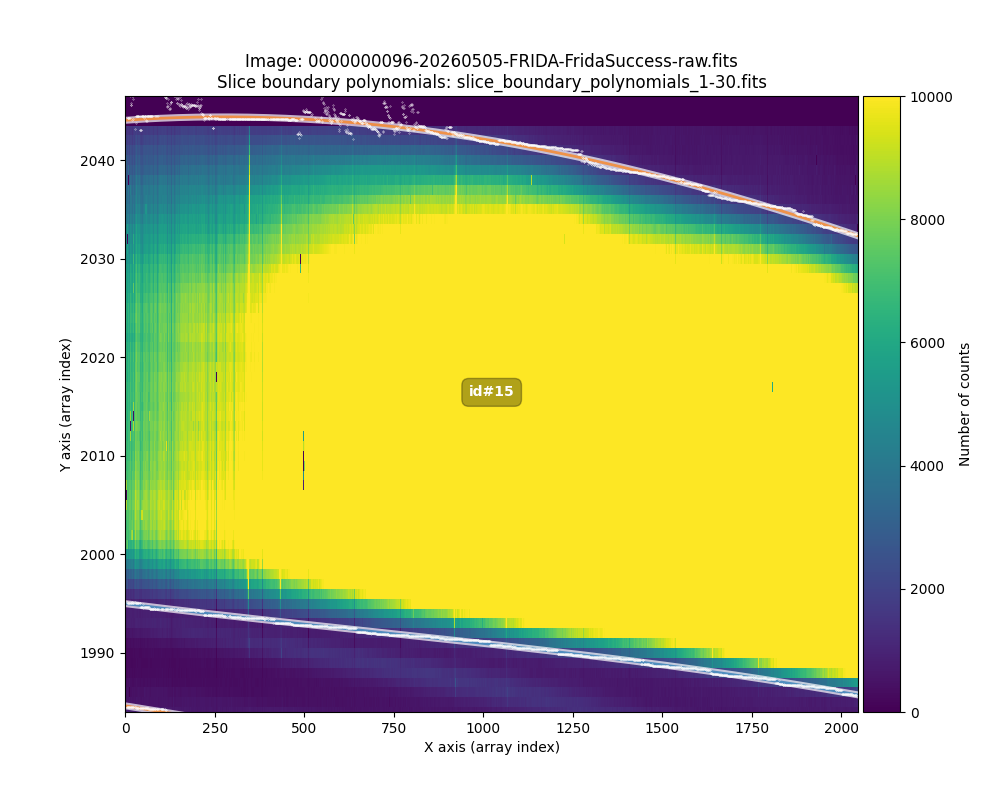
{kind=link}
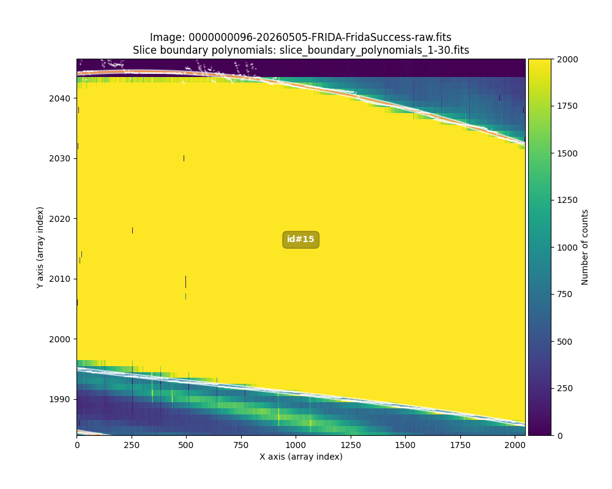
Fig. 19 Detail of the last slice (ID 15), using different cuts. It can be seen how the signal of this slice is truncated at the top because part of the slice falls outside the useful region of the detector. The polynomial fit of the upper boundary of that slice does not perform well, because a large fraction of the points have underestimated positions along the NAXIS2 axis.
We will now repeat the work carried out with the script
fridadrp-fit_slice_boundary_borders_with_polynomials, using as input the file
slice_boundary_borders_from_flat_1-29.fits (which does not contain boundary
values for slice ID 15).
(venv_frida) $ fridadrp-fit_slice_boundary_borders_with_polynomials \
--input slice_boundary_borders_from_flat_1-29.fits \
--output slice_boundary_polynomials_1-29.fits \
--deg 3 \
--overwrite
(venv_frida) $ fridadrp-overplot_slice_boundary_polynomials \
--borders slice_boundary_borders_from_flat_1-29.fits \
--poly slice_boundary_polynomials_1-29.fits \
--image 0000000096-20260505-FRIDA-FridaSuccess-raw.fits \
--sliceid
{kind=link}
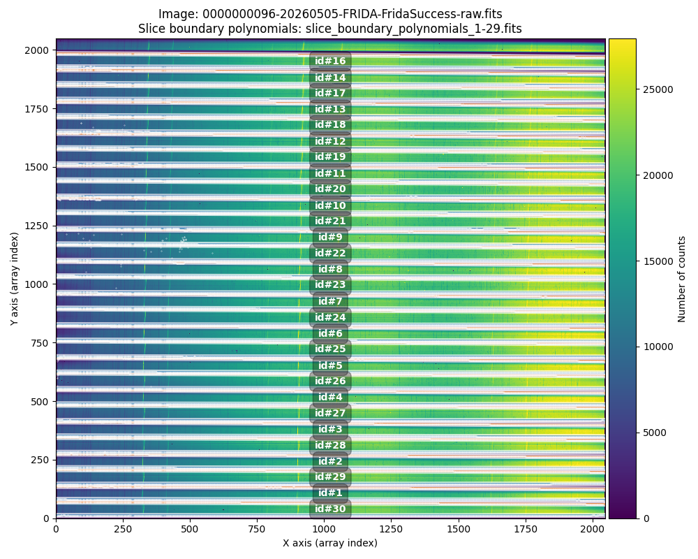
Fig. 20 Full image with the detected boundaries and the polynomial fits, excluding slice ID 15.
Predicting missing polynomial borders
As we have seen above, there appears to be a relatively continuous variation in
slice width when we consider them grouped into two families: IDs 1 to 15 on one
hand and IDs 16 to 30 on the other. The script
fridadrp-predict_polynomial_slice_borders makes use of this fact to try to
predict the polynomial boundaries of slices that may be partially outside the
detector. We have seen that this happens with several calibration images when
changing grating, and it can result in the boundaries of the bottom slice (ID
30) or the top slice (ID 15) not being determinable.
(venv_numina) $ fridadrp-predict_polynomial_slice_borders --help
In the example at hand, we are going to predict the polynomial boundaries of slice ID 15 (number 30 counting from bottom to top on the detector).
(venv_frida) $ fridadrp-predict_polynomial_slice_borders \
--poly slice_boundary_polynomials_1-29.fits \
--output slice_boundary_polynomials_1-30_fixed.fits \
--slicenum 30 \
--overwrite \
--plots
The script determines that the slice to be predicted (ID 15) belongs to the
family of slices with ID between 1 and 15. For each column along NAXIS1, the
code performs a polynomial fit of degree --degslice 2 (default) to the
position of each boundary as a function of slice number. This polynomial then
allows the boundary position to be predicted for the slice indicated in
--slicenum.
Since we used the --plots argument, several plots are shown during the
execution of this last script. First, the positions of the right and left
boundaries (along the NAXIS2 axis) of the slices used in the fit are shown, for
columns 1, 1025, and 2048 (along the NAXIS1 axis).
{kind=link}
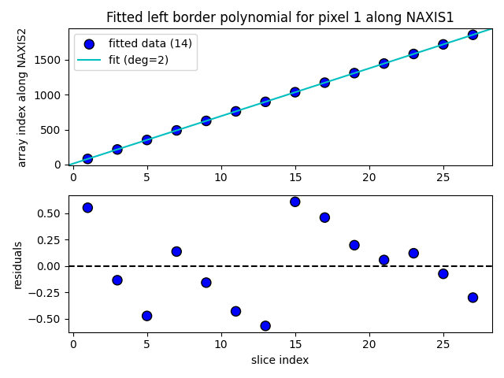
{kind=link}
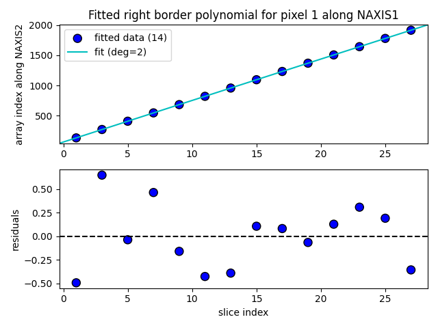
Fig. 21 Location of the polynomial boundaries for the slices used in the fit, for column 1 along the NAXIS1 axis.
{kind=link}
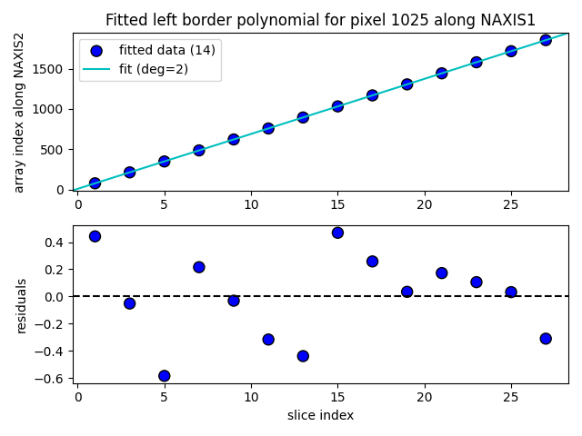
{kind=link}
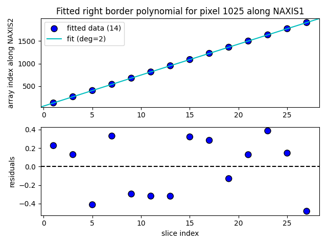
Fig. 22 Location of the polynomial boundaries for the slices used in the fit, for column 1025 along the NAXIS1 axis.
{kind=link}
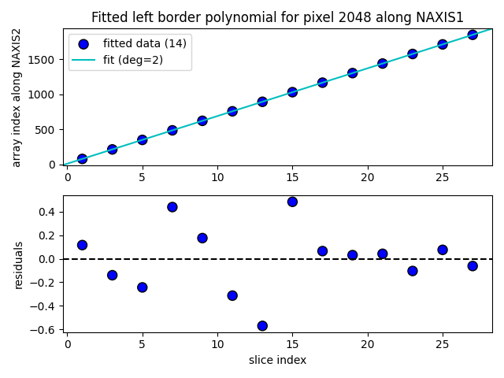
{kind=link}
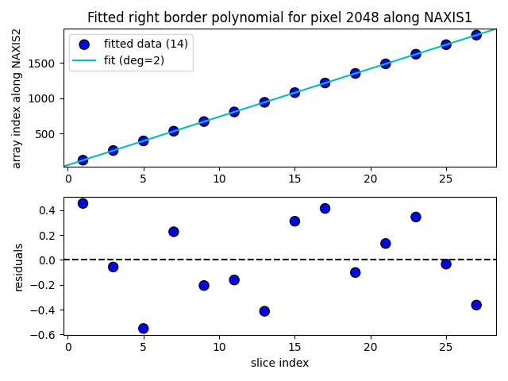
Fig. 23 Location of the polynomial boundaries for the slices used in the fit, for column 2048 along the NAXIS1 axis.
Once the fits have been performed for all detector columns along NAXIS1, the resulting polynomials are used to predict the expected location of the polynomial boundaries of the target slice at each column. These positions are then fitted with a polynomial of the same degree as the one used for the polynomial fits already stored in the input file.
{kind=link}
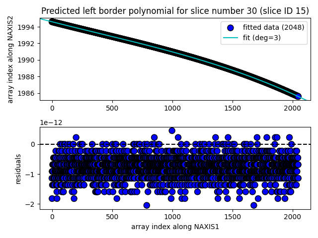
{kind=link}
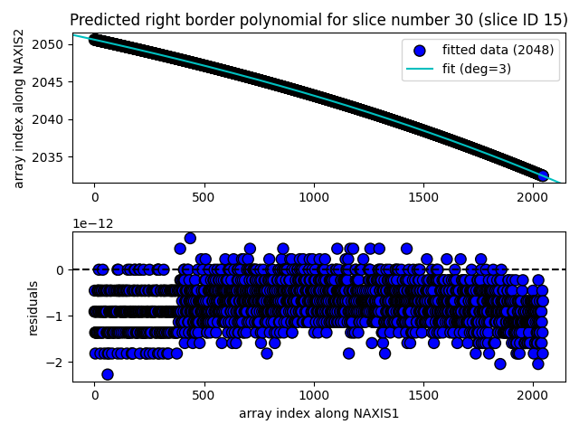
Fig. 24 Predicted left and right border polynomials for slice ID 15.
The result is stored in the output file specified by the --output argument.
In this case the output file is called
slice_boundary_polynomials_1-30_fixed.fits and has the same format as the
input file slice_boundary_polynomials_1-29_fixed.fits.
We can visualize the new result graphically.
(venv_frida) $ fridadrp-overplot_slice_boundary_polynomials \
--borders slice_boundary_borders_from_flat_1-30.fits \
--poly slice_boundary_polynomials_1-30_fixed.fits \
--image 0000000096-20260505-FRIDA-FridaSuccess-raw.fits \
--sliceid \
--ylim 1900 2060
{kind=link}
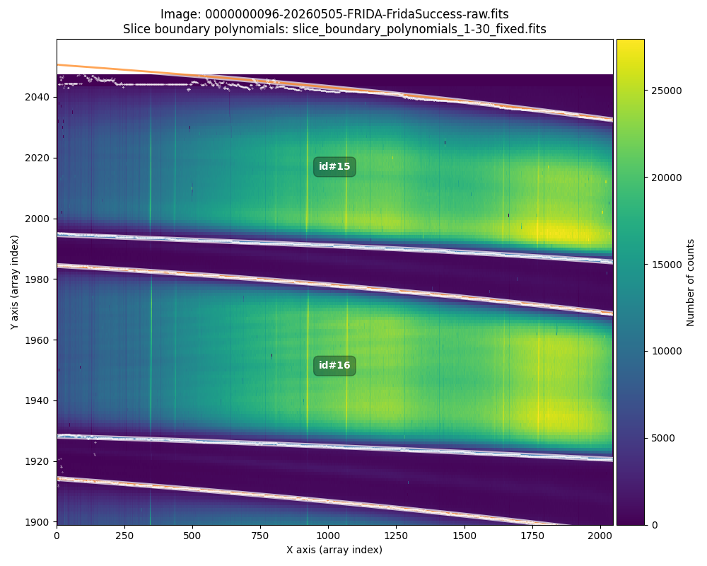
Fig. 25 Graphical comparison between the boundaries (white points) obtained by the
script fridadrp-find_slice_boundary_borders_from_flat and the prediction of
the polynomial boundaries computed with the script
fridadrp-predict_polynomial_slice_borders for slice ID 15. Note that the
right boundary (upper in the image) of that slice clearly falls outside the
useful region of the detector.
Polynomial fit of spectral traces
Initial example
Once we have obtained the boundaries of each slice and fitted them with
polynomials, we can move on to the next phase, which consists of obtaining
polynomial fits to the spectral traces. In this case we will use the script
fridadrp-find_traces_within_slice_boundary_polynomials.
(venv_numina) $ fridadrp-find_traces_within_slice_boundary_polynomials --help
To illustrate the procedure, as input image we will use
0000000132-20260506-FRIDA-FridaSuccess-raw.fits, which shows 5 spectral
traces in each slice.
(venv_frida) $ fridadrp-find_traces_within_slice_boundary_polynomials \
--image 0000000132-20260506-FRIDA-FridaSuccess-raw.fits \
--poly slice_boundary_polynomials_1-30_fixed.fits \
--voffset 0.0 \
--ntraces 5 \
--deg 3 \
--output traces_within_slice_polynomials.fits \
--pdf-out traces_within_slice_polynomials.pdf \
--plotsliceid 15 \
--overwrite
The first thing the script does is show us the image with the spectral traces,
overlaying on it the location of the polynomial boundaries. It is possible to
shift these boundaries in the vertical direction using --voffset. If this
argument takes a single value, the offset is assumed to be constant in the
vertical direction (positive: shifts the boundaries upward; negative: shifts
the boundaries downward). If more than one number is provided, the shift is
polynomial: the polynomial is computed using as its degree the number of points
minus one, so that the polynomial is exact. In this latter case, the numbers
entered are used as vertical offsets distributed uniformly along the NAXIS1
axis. In this example we are simply using --voffset 0.0.
It will be important to zoom in on the displayed image to better assess whether the polynomial boundaries are correct.
{kind=link}
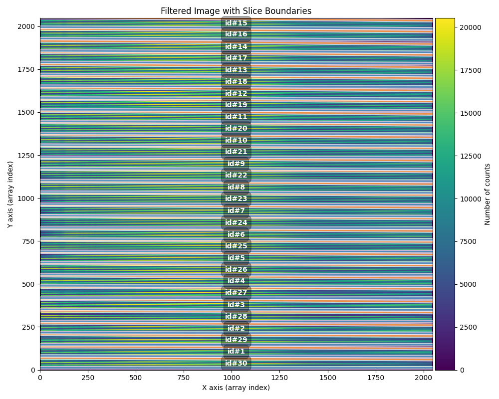
{kind=link}
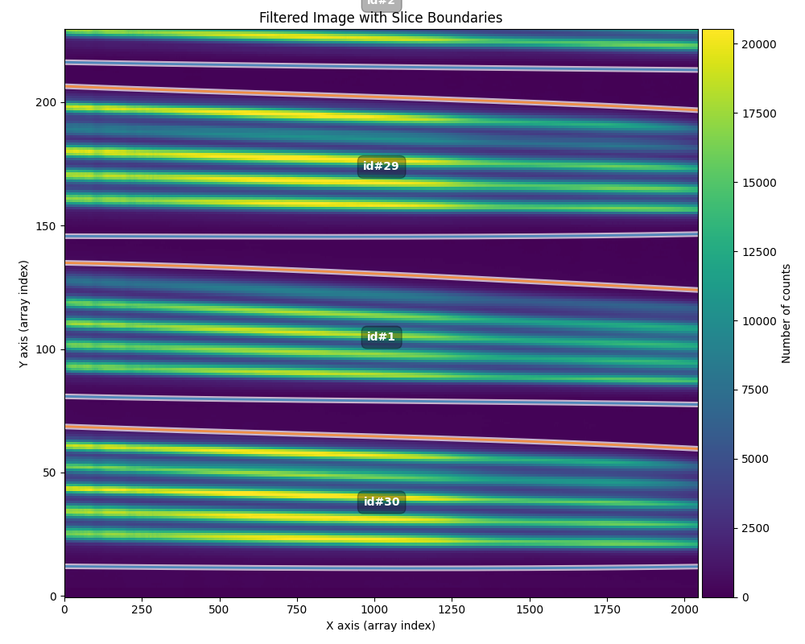
Fig. 26 Full image (left panel) and zoom of the first slices (right panel), with the polynomial boundaries overlaid.
Since we used --plotsliceid 15, the script will show us this problematic
slice in detail when it is reached (recall that it is partially outside the
useful region of the detector). As we saw earlier for the case of the
boundaries, it is also possible to predict the expected position of each of the
5 traces by making use of the fits to the same trace in other slices of the
same family. In this case the code tells us in the terminal that slice ID 15
belongs to the same family as the slices with ID between 1 and 15.
For each of the 5 traces, the polynomial fit is shown at 3 detector columns (5,
1025, and 2044), as well as the resulting polynomial fit of the trace as a
function of column number (note that the fit is performed over all the columns
specified in --colrange).
{kind=link}
{kind=link}
{kind=link}
{kind=link}
Fig. 27 Polynomial fits of the position of trace 1 as a function of slice number for columns 5, 1025, and 2044 (first three panels), and final polynomial fit of the trace as a function of column number along NAXIS1 (right panel). Although in the last plot it may seem that many points are being rejected in the fit (shown in red), note that the scale on the vertical axis indicates that we are fitting a small fraction of a pixel.
{kind=link}
{kind=link}
{kind=link}
{kind=link}
Fig. 28 Same as the previous figure, for the case of trace number 2.
{kind=link}
{kind=link}
{kind=link}
{kind=link}
Fig. 29 Same as the previous figures, for the case of trace number 3.
{kind=link}
{kind=link}
{kind=link}
{kind=link}
Fig. 30 Same as the previous figures, for the case of trace number 4.
{kind=link}
{kind=link}
{kind=link}
{kind=link}
Fig. 31 Same as the previous figures, for the case of trace number 5.
Once the expected positions for the 5 traces have been estimated, the code
attempts to refine the fit using the information in the image provided via
--image, provided that the entire trace lies within the useful region of the
detector. In this case this occurs for the first 4 traces (out of the total of
5).
{kind=link}
Fig. 32 Difference between the predicted position of trace number 1 and the fit to the signal in the input image. The correction is modeled by means of a polynomial fit.
{kind=link}
Fig. 33 Same as the previous figure, for the case of trace number 2.
{kind=link}
Fig. 34 Same as the previous figures, for the case of trace number 3.
{kind=link}
Fig. 35 Same as the previous figures, for the case of trace number 4.
Since trace number 5 falls outside the useful region of the detector, it is not possible to correct its position using the information in the input image.
Instead, an average of the corrections made to the other four traces is used.
{kind=link}
Fig. 36 Average correction computed using the corrections deduced for the 4 traces within the useful region of the detector.
Once all traces have been computed for the problematic slice, the program displays the result graphically.
{kind=link}
Fig. 37 Graphical comparison of the extrapolated traces for slice ID 15. The magenta (dashed line) shows the direct extrapolation using the information from the same traces in the slices of the same family. The cyan (solid line) represents the refined fit using the information from the input image.
Two output files are generated:
traces_within_slice_polynomials.fits: FITS file containing the polynomial boundaries and the polynomial traces. If--voffsetwas different from zero, the saved polynomial boundaries take this shift into account, so they will not be identical to those in the file specified via--poly.traces_within_slice_polynomials.pdf: PDF file showing, for each slice, the polynomial boundaries and the polynomial traces, overlaid on the image specified via--image.
The information in the file traces_within_slice_polynomials.fits is
distributed across several extensions:
(venv_fridat) $ fitsinfo traces_within_slice_polynomials.fits
The first extensions, L-BORDER, R-BORDER, and SLIWIDTH, are analogous to
those explained above for the file
slice_boundary_borders_from_flat_1-30.fits. There are 30 additional
extensions, SLCNUM??, one per slice, containing the arrays that store the
polynomial fit coefficients of the traces, where in this case NAXIS1=4 is the
number of coefficients (degree-3 polynomial) and NAXIS2=5 is the number of
traces.
It is possible to use the script fridadrp-overplot_slice_boundary_polynomials
again to display the result graphically. On this occasion, instead of using the
--poly argument, --traces must be used (note that --poly is not necessary
because the file containing the traces also contains the polynomials for the
slice boundaries).
(venv_frida) $ fridadrp-overplot_slice_boundary_polynomials \
--traces traces_within_slice_polynomials.fits \
--image 0000000132-20260506-FRIDA-FridaSuccess-raw.fits \
--sliceid
{kind=link}
Fig. 38 Display of the image specified via --image, with the polynomial boundaries
and traces stored in the file indicated via --traces. It is possible to zoom
in and navigate the image to check the quality of the fits performed.
{kind=link}
{kind=link}
Fig. 39 Zoomed-in view of the previous image, showing the first slices (left panel) and the last slices (right panel) in more detail.
The script fridadrp-overplot_slice_boundary_polynomials also has a
--pdf-mosaic argument that allows generating a PDF file with the polynomial
boundaries and traces plotted on the selected image, showing one slice per page
of the file.
(venv_frida) $ fridadrp-overplot_slice_boundary_polynomials \
--traces traces_within_slice_polynomials.fits \
--image 0000000132-20260506-FRIDA-FridaSuccess-raw.fits \
--traceid \
--pdf-mosaic traces_within_slice_polynomials_final.pdf
In this case the PDF file containing all the traces is called
traces_within_slice_polynomials_final.pdf.
We can also generate, from the PDF file just created, a mosaic (either in PDF
or PNG format) containing all 30 plots in the same figure. For this, it is
useful to use ImageMagick’s montage
command. For example:
(venv_frida) $ montage \
-density 300 \
traces_within_slice_polynomials_final.pdf \
-tile 6x5 \
-geometry 600x375+5+5 \
-background white \
traces_within_slice_polynomials_final_montage.pdf
An even more convenient way is to use --montage png or --montage pdf as an
argument of fridadrp-overplot_slice_boundary_polynomials.
{kind=link}
Fig. 40 Image resulting from using --montage png when running
fridadrp-overplot_slice_boundary_polynomials in the last command shown above.
Warning
The work that follows has been carried out using only the polynomial boundaries obtained above. It appears that these boundaries, obtained for a single case, seem to work well even when changing grating.
In the following sections, the fit to the spectral traces for the initial
calibration sequence, available in the directory
Configuraciones-calibracion_de_distorsion-IFS, is shown.
Grating zJ Low, Medium Camera
(venv_frida) $ fridadrp-find_traces_within_slice_boundary_polynomials \
--image config13/0000007804-20260512-FRIDA-FridaSuccess-raw.fits \
--poly ../Comfiguraciones-IM-IFS-pruebas_con_el_DFAgent/slice_boundary_polynomials_1-30_fixed.fits \
--voffset 6 \
--colrange 480 1660 \
--ntraces 6 \
--deg 2 \
--theilsen \
--output traces_within_slice_polynomials_007804.fits \
--pdf-out traces_within_slice_polynomials_007804.pdf \
--plotsliceid 15 \
--overwrite
(venv_frida) $ fridadrp-overplot_slice_boundary_polynomials \
--traces traces_within_slice_polynomials_007804.fits \
--image config13/0000007804-20260512-FRIDA-FridaSuccess-raw.fits \
--pdf-mosaic traces_within_slice_polynomials_007804_fixed.pdf \
--montage png \
--traceid
{kind=link}
Grating HK Low, Medium Camera
(venv_frida) $ fridadrp-find_traces_within_slice_boundary_polynomials \
--image config14/0000007810-20260512-FRIDA-FridaSuccess-raw.fits \
--poly ../Comfiguraciones-IM-IFS-pruebas_con_el_DFAgent/slice_boundary_polynomials_1-30_fixed.fits \
--voffset 6 \
--colrange 335 1215 --colrange 1775 2044 \
--ntraces 6 \
--deg 3 \
--theilsen \
--output traces_within_slice_polynomials_007810.fits \
--pdf-out traces_within_slice_polynomials_007810.pdf \
--plotsliceid 15 \
--overwrite
(venv_frida) $ fridadrp-overplot_slice_boundary_polynomials \
--traces traces_within_slice_polynomials_007810.fits \
--image config14/0000007810-20260512-FRIDA-FridaSuccess-raw.fits \
--pdf-mosaic traces_within_slice_polynomials_007810_fixed.pdf \
--montage png \
--traceid
{kind=link}
Grating z Medium, Medium Camera
(venv_frida) $ fridadrp-find_traces_within_slice_boundary_polynomials \
--image config02/0000000150-20260510-FRIDA-FridaSuccess-raw.fits \
--poly ../Comfiguraciones-IM-IFS-pruebas_con_el_DFAgent/slice_boundary_polynomials_1-30_fixed.fits \
--voffset -27 \
--colrange 400 2044 \
--ntraces 6 \
--deg 3 \
--theilsen \
--output traces_within_slice_polynomials_000150.fits \
--pdf-out traces_within_slice_polynomials_000150.pdf \
--plotsliceid 30 \
--overwrite
(venv_frida) $ fridadrp-overplot_slice_boundary_polynomials \
--traces traces_within_slice_polynomials_000150.fits \
--image config02/0000000150-20260510-FRIDA-FridaSuccess-raw.fits \
--pdf-mosaic traces_within_slice_polynomials_000510_fixed.pdf \
--montage png \
--traceid
{kind=link}
Grating J Medium, Medium Camera
(venv_frida) $ fridadrp-find_traces_within_slice_boundary_polynomials \
--image config01/0000000147-20260510-FRIDA-FridaSuccess-raw.fits \
--poly ../Comfiguraciones-IM-IFS-pruebas_con_el_DFAgent/slice_boundary_polynomials_1-30_fixed.fits \
--voffset 9 \
--colrange 5 2044 \
--ntraces 6 \
--deg 3 \
--theilsen \
--output traces_within_slice_polynomials_000147.fits \
--pdf-out traces_within_slice_polynomials_000147.pdf \
--plotsliceid 15 \
--overwrite
(venv_frida) $ fridadrp-overplot_slice_boundary_polynomials \
--traces traces_within_slice_polynomials_000147.fits \
--image config01/0000000147-20260510-FRIDA-FridaSuccess-raw.fits \
--pdf-mosaic traces_within_slice_polynomials_000147_fixed.pdf \
--montage png \
--traceid
{kind=link}
Grating H Medium, Medium Camera
(venv_frida) $ fridadrp-find_traces_within_slice_boundary_polynomials \
--image config03/0000000153-20260511-FRIDA-FridaSuccess-raw.fits \
--poly ../Comfiguraciones-IM-IFS-pruebas_con_el_DFAgent/slice_boundary_polynomials_1-30_fixed.fits \
--voffset 4 \
--colrange 5 2044 \
--ntraces 6 \
--deg 3 \
--theilsen \
--output traces_within_slice_polynomials_000153.fits \
--pdf-out traces_within_slice_polynomials_000153.pdf \
--plotsliceid 15 \
--overwrite
(venv_frida) $ fridadrp-overplot_slice_boundary_polynomials \
--traces traces_within_slice_polynomials_000153.fits \
--image config03/0000000153-20260511-FRIDA-FridaSuccess-raw.fits \
--pdf-mosaic traces_within_slice_polynomials_000153_fixed.pdf \
--montage png \
--traceid
{kind=link}
Grating K Medium, Medium Camera
(venv_frida) $ fridadrp-find_traces_within_slice_boundary_polynomials \
--image config04/0000000156-20260511-FRIDA-FridaSuccess-raw.fits \
--poly ../Comfiguraciones-IM-IFS-pruebas_con_el_DFAgent/slice_boundary_polynomials_1-30_fixed.fits \
--voffset 0 \
--colrange 5 2044 \
--ntraces 6 \
--deg 3 \
--theilsen \
--output traces_within_slice_polynomials_000156.fits \
--pdf-out traces_within_slice_polynomials_000156.pdf \
--plotsliceid 15 \
--overwrite
(venv_frida) $ fridadrp-overplot_slice_boundary_polynomials \
--traces traces_within_slice_polynomials_000156.fits \
--image config04/0000000156-20260511-FRIDA-FridaSuccess-raw.fits \
--pdf-mosaic traces_within_slice_polynomials_000156_fixed.pdf \
--montage png \
--traceid
{kind=link}
Grating H High1, Medium Camera
In this case we need to use --voffset 3 22 to apply a different vertical
shift on the left side than on the right side.
(venv_frida) $ fridadrp-find_traces_within_slice_boundary_polynomials \
--image config09/0000000171-20260511-FRIDA-FridaSuccess-raw.fits \
--poly ../Comfiguraciones-IM-IFS-pruebas_con_el_DFAgent/slice_boundary_polynomials_1-30_fixed.fits \
--voffset 3 22 \
--colrange 5 2044 \
--ntraces 6 \
--deg 3 \
--theilsen \
--output traces_within_slice_polynomials_000171.fits \
--pdf-out traces_within_slice_polynomials_000171.pdf \
--plotsliceid 15 \
--overwrite
(venv_frida) $ fridadrp-overplot_slice_boundary_polynomials \
--traces traces_within_slice_polynomials_000171.fits \
--image config09/0000000171-20260511-FRIDA-FridaSuccess-raw.fits \
--pdf-mosaic traces_within_slice_polynomials_000171_fixed.pdf \
--montage png \
--traceid
{kind=link}
In this case the traces of the slices with ID 16 and 17 are incorrect. To fix
them we can use the script fridadrp-interpolate_traces_within_slices.
(venv_numina) $ fridadrp-interpolate_traces_within_slices --help
If in this script we specify more than one slice using --sliceid several
times, the order matters. The traces of each slice are
interpolated/extrapolated in the order given. Once the traces of a particular
slice have already been interpolated/extrapolated, they are then reused for the
next slice (if it belongs to the same group as the new slice).
(venv_frida) $ fridadrp-interpolate_traces_within_slices \
--image config09/0000000171-20260511-FRIDA-FridaSuccess-raw.fits \
--traces traces_within_slice_polynomials_000171.fits \
--sliceid 17 --sliceid 16 \
--output traces_within_slice_polynomials_000171_fixed.fits \
--norefine \
--plots \
--overwrite
If we do not use --plots, nothing is plotted.
If we do not use --norefine, the code attempts to refine the traces using
information from the image (smoothed with --xmedian 21 by default). The
refinement does not always work well, especially when there is a very weak
trace at the edges. In this particular case it is better not to refine.
Important: there is a --skip-sliceid argument (which can be used multiple
times) to indicate slice IDs corresponding to slices that we do not want to use
as input in the interpolation/extrapolation. By default it is an empty list.
We check the new traces:
(venv_frida) $ fridadrp-overplot_slice_boundary_polynomials \
--traces traces_within_slice_polynomials_000171_fixed.fits \
--image config09/0000000171-20260511-FRIDA-FridaSuccess-raw.fits \
--pdf-mosaic traces_within_slice_polynomials_000171_fixed2.pdf \
--montage png \
--traceid
{kind=link}
The result is better, but still not fully satisfactory: trace number 1 of the slices with ID 15, 16, 14, and 17 remains slightly elevated on the left side.
Grating H High2, Medium Camera
(venv_frida) $ fridadrp-find_traces_within_slice_boundary_polynomials \
--image config10/0000000174-20260511-FRIDA-FridaSuccess-raw.fits \
--poly ../Comfiguraciones-IM-IFS-pruebas_con_el_DFAgent/slice_boundary_polynomials_1-30_fixed.fits \
--voffset -2 17 \
--colrange 5 2044 \
--ntraces 6 \
--deg 3 \
--theilsen \
--output traces_within_slice_polynomials_000174.fits \
--pdf-out traces_within_slice_polynomials_000174.pdf \
--plotsliceid 15 \
--overwrite
(venv_frida) $ fridadrp-overplot_slice_boundary_polynomials \
--traces traces_within_slice_polynomials_000174.fits \
--image config10/0000000174-20260511-FRIDA-FridaSuccess-raw.fits \
--pdf-mosaic traces_within_slice_polynomials_000174_fixed.pdf \
--montage png \
--traceid
{kind=link}
There are some problems with the traces of slices with ID 15, 16, and 17.
(venv_frida) $ fridadrp-interpolate_traces_within_slices \
--image config10/0000000174-20260511-FRIDA-FridaSuccess-raw.fits \
--traces traces_within_slice_polynomials_000174.fits \
--sliceid 17 --sliceid 16 --sliceid 15 \
--output traces_within_slice_polynomials_000174_fixed.fits \
--norefine \
--plots \
--overwrite
(venv_frida) $ fridadrp-overplot_slice_boundary_polynomials \
--traces traces_within_slice_polynomials_000174_fixed.fits \
--image config10/0000000174-20260511-FRIDA-FridaSuccess-raw.fits \
--pdf-mosaic traces_within_slice_polynomials_000174_fixed2.pdf \
--montage png \
--traceid
{kind=link}
Grating H High3, Medium Camera
Here the signal is weak, and it is noticeable that the DARK has not been
properly subtracted. To fix this, we use --ymedian 101 (the default is
--ymedian 0, in which case no median filter is applied in the vertical
direction and its result is not subtracted). If --ymedian is different from
zero, this filtering and subtraction is performed before the one corresponding
to --xmedian.
(venv_frida) $ fridadrp-find_traces_within_slice_boundary_polynomials \
--image config11/0000007797-20260511-FRIDA-FridaSuccess_raw.fits \
--poly ../Comfiguraciones-IM-IFS-pruebas_con_el_DFAgent/slice_boundary_polynomials_1-30_fixed.fits \
--voffset 13 15 \
--ymedian 101 \
--colrange 5 2044 \
--ntraces 6 \
--deg 3 \
--theilsen \
--output traces_within_slice_polynomials_007797.fits \
--pdf-out traces_within_slice_polynomials_007797.pdf \
--plotsliceid 15 \
--overwrite
(venv_frida) $ fridadrp-overplot_slice_boundary_polynomials \
--traces traces_within_slice_polynomials_007797.fits \
--image config11/0000007797-20260511-FRIDA-FridaSuccess_raw.fits \
--pdf-mosaic traces_within_slice_polynomials_007797_fixed.pdf \
--montage png \
--traceid

Only the traces of the slices with ID 30, 29, 28, …, 16 are well fitted (half of the 30 total slices). Of the sequence with ID 1, 2, …, 15, only slice ID 3 turns out well. The following therefore fail: slices ID 1, 2, 4, 5, 6, 7, 8, 9, 10, 11, 12, 13, 14, and 15. We need an image with a longer exposure time.
Grating H High4, Medium Camera
(venv_frida) $ fridadrp-find_traces_within_slice_boundary_polynomials \
--image config12/0000007801-20260512-FRIDA-FridaSuccess-raw.fits \
--poly ../Comfiguraciones-IM-IFS-pruebas_con_el_DFAgent/slice_boundary_polynomials_1-30_fixed.fits \
--voffset 12 15 \
--colrange 5 2044 \
--ntraces 6 \
--deg 3 \
--theilsen \
--output traces_within_slice_polynomials_007801.fits \
--pdf-out traces_within_slice_polynomials_007801.pdf \
--plotsliceid 15 \
--overwrite
(venv_frida) $ fridadrp-overplot_slice_boundary_polynomials \
--traces traces_within_slice_polynomials_007801.fits \
--image config12/0000007801-20260512-FRIDA-FridaSuccess-raw.fits \
--pdf-mosaic traces_within_slice_polynomials_007801_fixed.pdf \
--montage png \
--traceid
{kind=link}
Grating K High1, Medium Camera
(venv_frida) $ fridadrp-find_traces_within_slice_boundary_polynomials \
--image config05/0000000159-20260511-FRIDA-FridaSuccess-raw.fits \
--poly ../Comfiguraciones-IM-IFS-pruebas_con_el_DFAgent/slice_boundary_polynomials_1-30_fixed.fits \
--voffset -16 -8 \
--colrange 5 2044 \
--ntraces 6 \
--deg 3 \
--theilsen \
--output traces_within_slice_polynomials_000159.fits \
--pdf-out traces_within_slice_polynomials_000159.pdf \
--plotsliceid 30 \
--overwrite
(venv_frida) $ fridadrp-overplot_slice_boundary_polynomials \
--traces traces_within_slice_polynomials_000159.fits \
--image config05/0000000159-20260511-FRIDA-FridaSuccess-raw.fits \
--pdf-mosaic traces_within_slice_polynomials_000159_fixed.pdf \
--montage png \
--traceid
{kind=link}
Here the slices with ID 15, 16, 17, 18, 19, and 30 are incorrect (the latter partially outside the detector). Slice ID 15 can be well predicted from group 1..15. It is then of interest to process slices ID 19, 18, 17, and 16 (in that order, since this way we move progressively further away from the extrapolation of the slices with ID 29..20). Finally, we can predict slice 30 from the slices with ID 29..16 (having already corrected slices ID 16, 17, 18, and 19).
(venv_frida) $ fridadrp-interpolate_traces_within_slices \
--image config05/0000000159-20260511-FRIDA-FridaSuccess-raw.fits \
--traces traces_within_slice_polynomials_000159.fits \
--sliceid 15 --sliceid 19 --sliceid 18 --sliceid 17 --sliceid 16 \
--sliceid 30 \
--output traces_within_slice_polynomials_000159_fixed.fits \
--norefine \
--plots \
--overwrite
(venv_frida) $ fridadrp-overplot_slice_boundary_polynomials \
--traces traces_within_slice_polynomials_000159_fixed.fits \
--image config05/0000000159-20260511-FRIDA-FridaSuccess-raw.fits \
--pdf-mosaic traces_within_slice_polynomials_000159_fixed2.pdf \
--montage png \
--traceid
{kind=link}
Grating K High2, Medium Camera
(venv_frida) $ fridadrp-find_traces_within_slice_boundary_polynomials \
--image config06/0000000162-20260511-FRIDA-FridaSuccess-raw.fits \
--poly ../Comfiguraciones-IM-IFS-pruebas_con_el_DFAgent/slice_boundary_polynomials_1-30_fixed.fits \
--voffset -26 -16 \
--colrange 5 2044 \
--ntraces 6 \
--deg 3 \
--theilsen \
--output traces_within_slice_polynomials_000162.fits \
--pdf-out traces_within_slice_polynomials_000162.pdf \
--plotsliceid 30 \
--overwrite
(venv_frida) $ fridadrp-overplot_slice_boundary_polynomials \
--traces traces_within_slice_polynomials_000162.fits \
--image config06/0000000162-20260511-FRIDA-FridaSuccess-raw.fits \
--pdf-mosaic traces_within_slice_polynomials_000162_fixed.pdf \
--montage png \
--traceid
{kind=link}
Here the slices with ID 15, 16, 14, 17, 18, 19, and 30 are incorrect (the latter partially outside the detector).
(venv_frida) $ fridadrp-interpolate_traces_within_slices \
--image config06/0000000162-20260511-FRIDA-FridaSuccess-raw.fits \
--traces traces_within_slice_polynomials_000162.fits \
--sliceid 14 --sliceid 15 \
--sliceid 19 --sliceid 18 --sliceid 17 --sliceid 16 --sliceid 30 \
--output traces_within_slice_polynomials_000162_fixed.fits \
--norefine \
--plots \
--overwrite
(venv_frida) $ fridadrp-overplot_slice_boundary_polynomials \
--traces traces_within_slice_polynomials_000162_fixed.fits \
--image config06/0000000162-20260511-FRIDA-FridaSuccess-raw.fits \
--pdf-mosaic traces_within_slice_polynomials_000162_fixed2.pdf \
--montage png \
--traceid
{kind=link}
Traces number 1 of slices with ID 15, 16, 14, 17, 13, 18, and 19 remain slightly elevated on the left side. It would be worth trying with a better image.
Grating K High3, Medium Camera
(venv_frida) $ fridadrp-find_traces_within_slice_boundary_polynomials \
--image config07/0000000165-20260511-FRIDA-FridaSuccess-raw.fits \
--poly ../Comfiguraciones-IM-IFS-pruebas_con_el_DFAgent/slice_boundary_polynomials_1-30_fixed.fits \
--voffset -46 -36 \
--colrange 5 2044 \
--ntraces 6 \
--deg 3 \
--theilsen \
--output traces_within_slice_polynomials_000165.fits \
--pdf-out traces_within_slice_polynomials_000165.pdf \
--plotsliceid 30 \
--overwrite
(venv_frida) $ fridadrp-overplot_slice_boundary_polynomials \
--traces traces_within_slice_polynomials_000165.fits \
--image config07/0000000165-20260511-FRIDA-FridaSuccess-raw.fits \
--pdf-mosaic traces_within_slice_polynomials_000165_fixed.pdf \
--montage png \
--traceid
{kind=link}
Here the slices with ID 19, 18, 13, 17, 14, 16, 15, and 30 are incorrect (the latter partially outside the detector).
(venv_frida) $ fridadrp-interpolate_traces_within_slices \
--image config07/0000000165-20260511-FRIDA-FridaSuccess-raw.fits \
--traces traces_within_slice_polynomials_000165.fits \
--sliceid 13 --sliceid 14 --sliceid 15 \
--sliceid 19 --sliceid 18 --sliceid 17 --sliceid 16 --sliceid 30 \
--output traces_within_slice_polynomials_000165_fixed.fits \
--norefine \
--plots \
--overwrite
(venv_frida) $ fridadrp-overplot_slice_boundary_polynomials \
--traces traces_within_slice_polynomials_000165_fixed.fits \
--image config07/0000000165-20260511-FRIDA-FridaSuccess-raw.fits \
--pdf-mosaic traces_within_slice_polynomials_000165_fixed2.pdf \
--montage png \
--traceid
{kind=link}
Traces number 1 of slices ID 16, 17, and 18 remain slightly elevated on the left side. It would be worth trying with a better image.
Grating K High4, Medium Camera
(venv_frida) $ fridadrp-find_traces_within_slice_boundary_polynomials \
--image config08/0000000168-20260511-FRIDA-FridaSuccess-raw.fits \
--poly ../Comfiguraciones-IM-IFS-pruebas_con_el_DFAgent/slice_boundary_polynomials_1-30_fixed.fits \
--voffset -56 -46 \
--colrange 5 2044 \
--ntraces 6 \
--deg 3 \
--theilsen \
--output traces_within_slice_polynomials_000168.fits \
--pdf-out traces_within_slice_polynomials_000168.pdf \
--plotsliceid 30 \
--overwrite
(venv_frida) $ fridadrp-overplot_slice_boundary_polynomials \
--traces traces_within_slice_polynomials_000168.fits \
--image config08/0000000168-20260511-FRIDA-FridaSuccess-raw.fits \
--pdf-mosaic traces_within_slice_polynomials_000168_fixed.pdf \
--montage png \
--traceid
{kind=link}
Here the slices with ID 15, 16, 14, 17, 13, 18, and 30 are incorrect (the latter partially outside the detector).
(venv_frida) $ fridadrp-interpolate_traces_within_slices \
--image config08/0000000168-20260511-FRIDA-FridaSuccess-raw.fits \
--traces traces_within_slice_polynomials_000168.fits \
--sliceid 13 --sliceid 14 --sliceid 15 \
--sliceid 18 --sliceid 17 --sliceid 16 --sliceid 30 \
--output traces_within_slice_polynomials_000168_fixed.fits \
--norefine \
--plots \
--overwrite
(venv_frida) $ fridadrp-overplot_slice_boundary_polynomials \
--traces traces_within_slice_polynomials_000168_fixed.fits \
--image config08/0000000168-20260511-FRIDA-FridaSuccess-raw.fits \
--pdf-mosaic traces_within_slice_polynomials_000168_fixed2.pdf \
--montage png \
--traceid
{kind=link}
Traces number 1 of slices ID 15, 16, 14, 17, 13, and 18 remain slightly elevated on the left side. It would be worth trying with a better image.